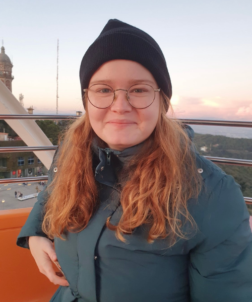
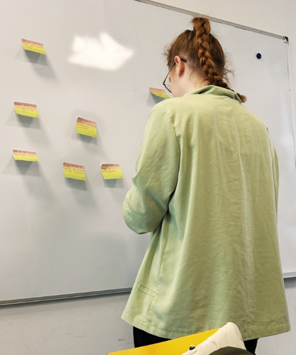

Mit navn er Sofie Crillesen. Jeg søger en praktikplads til at styrke og udfolde mine kreative evner.
Som studerende på 3. semester af Multimediedesigner-uddannelsen, specialiserer jeg mig i Frontend-development og arbejder målrettet mod at skabe engagerende brugeroplevelser.


Jeg har altid haft en nysgerrighed for verden omkring mig, hvilket har ført til at jeg har boet og arbejdet i udlandet i flere år, før jeg kom tilbage for at tage multimediedesigner uddannelsen. Mine år i udlandet har givet mig et bredt perspektiv på forskellige kulturer og måder at arbejde på, hvilket har styrket min evne til at tilpasse mig og kommunikere effektivt.
På uddannelsen har gruppearbejde været en central del af min læring, og jeg har lært hvor vigtigt det er at bringe forskellige perspektiver sammen for at opnå de bedste resultater. Jeg elsker udfordringen ved at finde kreative og effektive løsninger, både teknisk og designmæssigt, og ser det som en mulighed for konstant at lære og forbedre mig.
Værktøjer
Et indblik i mine projekter
Et indblik i mine projekter, hvor de fleste er udviklet i teams. Hvert projekt afspejler vores fælles indsats, kreativitet og teamwork.

Mit arbejdsflow
Research
I researchfasen af udviklingen af et multimedieprodukt fokuserer jeg på at forstå målgruppens behov og præferencer gennem grundig analyse og brugerundersøgelser. Gennem indsamling af data sikrer jeg, at vi udvikler et produkt, der er både innovativt og skræddersyet til brugernes og klientens forventninger.
Design
I designfasen arbejder jeg på at omsætte de indsamlede data og indsigter til konkrete designløsninger. Jeg laver skitser, wireframes og prototyper for at sikre en brugervenlig oplevelse, hvor designet er både æstetisk tiltalende og funktionelt.
Udvikling -> Review -> Iteration
I udviklingsfasen skaber vi den første version af produktet ud fra design og krav. Under review-fasen evaluerer vi produktet grundigt for at identificere styrker og svagheder. I iterationsfasen forfiner og forbedrer vi produktet baseret på feedback fra review-fasen, hvilket sikrer, at vi til sidst opnår den ønskede løsning med optimal funktionalitet og brugeroplevelse.